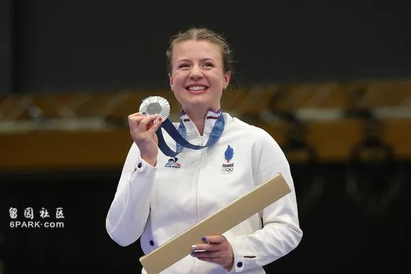
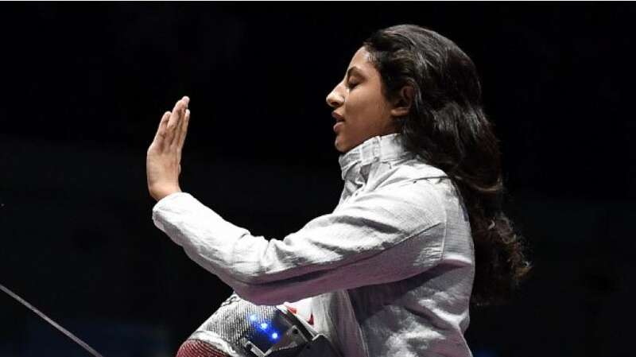

《世界报》报道，尽管巴黎奥运会开幕式遭到保守派人士的批评，但随着巴黎奥运会进程过半，国际媒体称赞巴黎奥运会在全球引发“集体狂欢”。
01法国爱国热情高涨
无论是巴黎奥运会开幕式，还是奥运赛事、体育氛围，都引起了世界媒体和政坛、全球民众的关注、评价。
德国中右翼主流媒体《法兰克福汇报》（FAZ）8月3日以“集体狂欢在巴黎蔓延”为题，通过法国游泳运动员马尔尚（Léon Marchand）、法国乒乓球运动员勒布伦（Félix Lebrun）在奥运会上获得出色成绩，注意到法国的“狂热爱国情绪”。
▲17岁的法国小将菲利克斯·勒布伦（Félix Lebrun）在男子乒乓球单打比赛中4比0击败巴西选手雨果·卡尔德拉诺（Hugo Calderano），夺得男单铜牌。（法新社图）
该媒体评价说，法国表现出的喜悦以及对奥运的热爱之情，甚至让唱衰巴黎奥运的人“被迫投降”，此前这些人预测奥运期间巴黎交通混乱、面临重大安全问题、法国运动员相继失利。
《法兰克福汇报》还表示，跟1998年法国世界杯一样， 悲观主义者的语境与狂热氛围不相符。此外，在了解到奥运会成功举办带来的丰厚收益后，德国7月底宣布正式申办2040年夏季奥运会，届时正值德国统一50周年。
02“巴黎再次成为派对之城”
美国《纽约时报》（The New York Times）则表示，马尔尚在每一场游泳比赛中获得的优异成绩都会引发失控的狂欢，不仅限于巴黎奥运游泳赛馆，而是遍布整个巴黎；在荣军院体育场举行的25米手枪射击比赛上，法国选手耶德尔热耶夫斯基（Camille Jedrzejewski）摘银成功引起的骚乱可能唤醒拿破仑。

▲法国25米手枪射击选手耶德尔热耶夫斯基（Camille Jedrzejewski）。（法新社图）
《纽约时报》还表示，“这可能让巴黎人都感到惊讶。在巴黎奥运会开幕数周、数月前，抱怨、担忧声音不断”，“而就在法国柔道运动员里內（Teddy Riner）与前田径名将佩雷克（Marie-Jose Perec）点燃奥运圣火台之前，可悲的宿命论、对奥运会的冷漠气氛已烟消云散。开幕式上的雨停了，巴黎再次成为派对之城”。
03巴黎奥运会成为榜样
德媒“德国编辑部网络”（RND）还以法国“展现了如何运作”为题，称“巴黎展示了如何将体育完美地融入大都市之中”，“法国首都是全新奥运会的代名词，不再花费巨额资金建造一次性仅供举行奥运赛事的体育场”。
西班牙媒体《国家报》8月5日报道，“法国（的抱怨声）似乎主动放假了”。“悲观主义者多年来一直在做最坏的准备”，但最终，这座城市“气氛轻松愉快”，甚至在执勤警察的脸上都带着笑容。
04“具有女权主义色彩”
波兰最大的全国性日报《选举报》（Gazeta Wyborcza）的女性副刊向这一届具有女权主义特色的奥运会致敬，称赞“巴黎奥运会男女平等竞争”，并强调奥运村首次提供托儿所、讲述女性故事，其中：埃及埃及击剑运动员哈菲兹（Nada Hafez）止步16强赛后透露，已经怀孕七个月，还有巴西击剑运动员莫尔豪森（Nathalie Moellhausen）在与癌症斗争的情况下，奋战到底。

▲埃及击剑运动员哈菲兹（Nada Hafez）。（法新社图）
05中国民众高度关注
法媒还观察到，中国媒体对巴黎奥运进行了广泛报道，中国民众对巴黎奥运热情高涨。自巴黎奥运会赛事开始以来，中国运动员的成绩一直占据主导地位。截至目前，中国在奖牌榜上名列前茅，奖牌总数仅次于美国。
在体操、乒乓球、射击、游泳等项目上，中国运动员表现优异，掀起民众热情，尤其是中国游泳运动员潘展乐称霸男子100米自由泳比赛，并打破该项比赛的世界纪录。